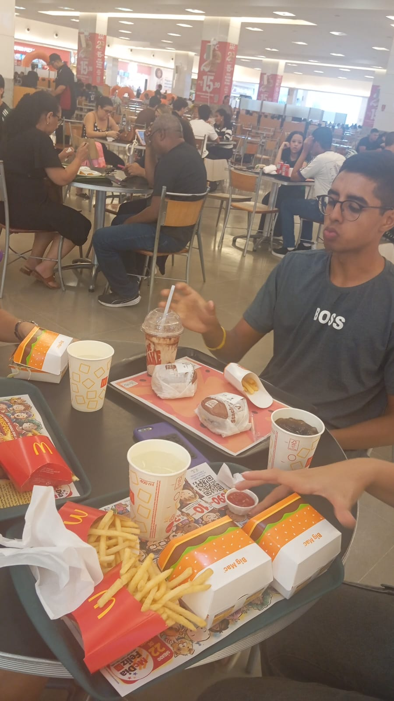
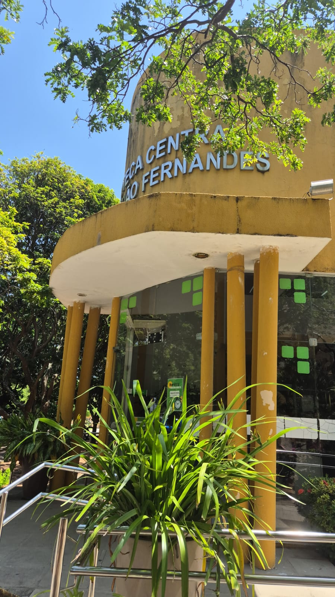
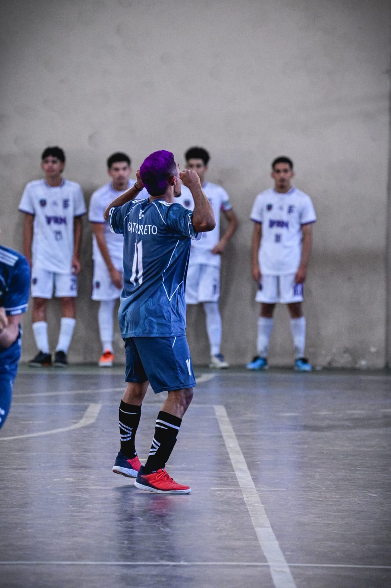
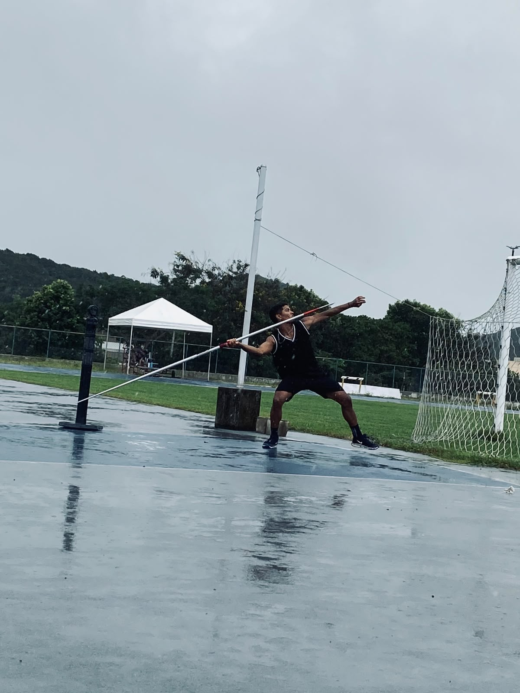

Gestão e representação sindical dialogam sobre demandas dos servidores
Encontros realizados em agosto abordaram temas relacionados ao PGD, prioridades legais, readaptação e banco de horas.

Encontros realizados em agosto abordaram temas relacionados ao PGD, prioridades legais, readaptação e banco de horas.

Atividades acontecem nesta sexta-feira (28) e sábado (29), no Centro de Tecnologia e Cultura do IFRN

Resultados de sexta-feira e sábado encerraram a fase final estadual

Programação reúne integrantes para discutir o regimento interno e aprofundar conhecimentos sobre processos relacionados à carreira docente.
Programação reúne integrantes para discutir o regimento interno e aprofundar conhecimentos sobre processos relacionados à carreira docente.
Programação ocorreu entre os dias 26 e 28 de agosto, no Campus Santa Cruz
Quinta-feira reúne estreia da modalidade e rodadas que encaminham as semifinais da fase final
O evento promoveu formação, troca de experiências e discussões sobre a regulamentação e o acompanhamento dos Projetos de Ensino no Instituto.

Segundo dia da fase final teve provas individuais, disputas coletivas e continuidade das rodadas classificatórias